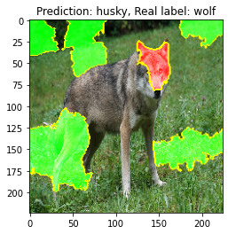
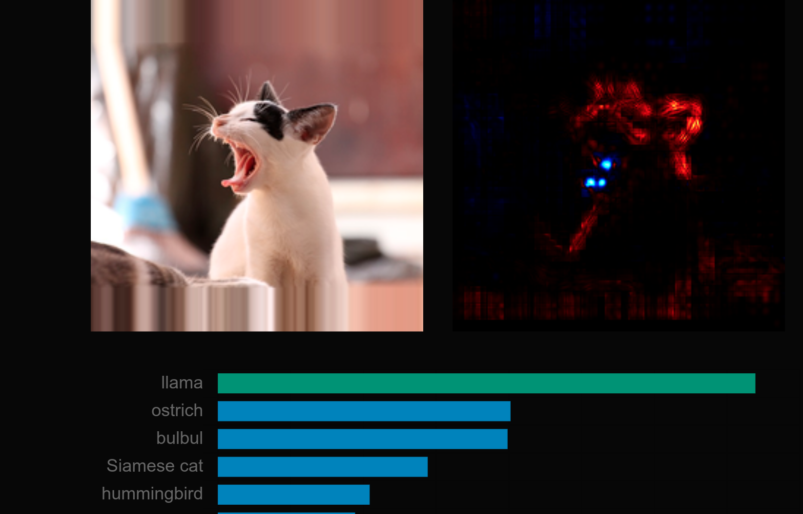

Explainable AI
Kemal Erdem, Piotr Mazurek, Piotr RarusAgenda
- XAI Introduction
- LIME
- GradCAM
- Integrated Gradients
- Potential issues with XAI methods
XAI Approaches
- Attribution methods
- ...
XAI challenges
How to evaluate explanation?
Why one explanation is better then another
How to Evaluate XAI?

Infidelity
Infidelity
code here
Sensitivity
Sensitivity
code here
Sensitivity
Other
XAI challenges
How to explain a wrong prediction
Wrong prediction
Explanation makes even less sense
XAI challenges
Hyperparameters have a massive impact on a given explanation
Ok, I'm hyped
Where I should start my PhD
TLDR
- XAI methods doesn't always work great
- but still we need them to trust ML systems
- Available out-of-the-box implementations that will work with your model
- An open problem, many challenges
Thanks
"There's no such thing as a stupid question!"
Kemal Erdem, Piotr Mazurek, Piotr Rarus
Presentation avalibe at: https://tugot17.github.io/XAI-Presentation